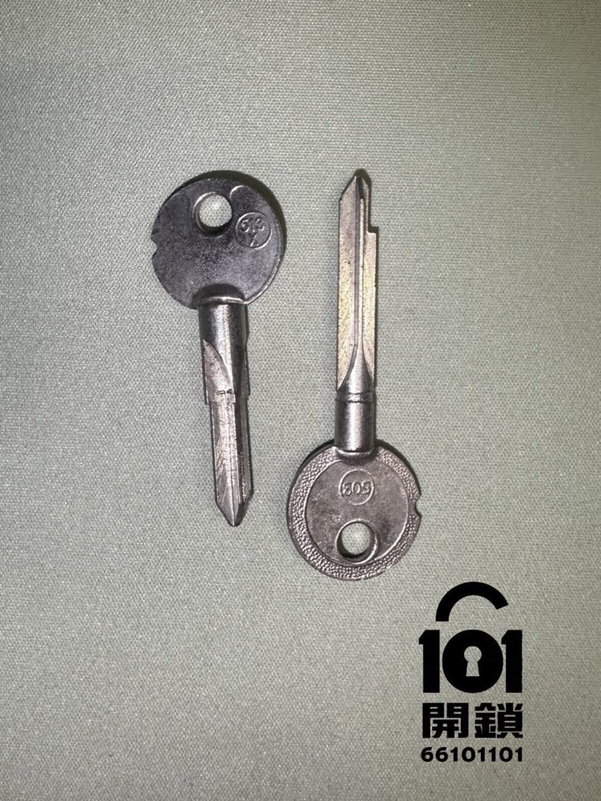
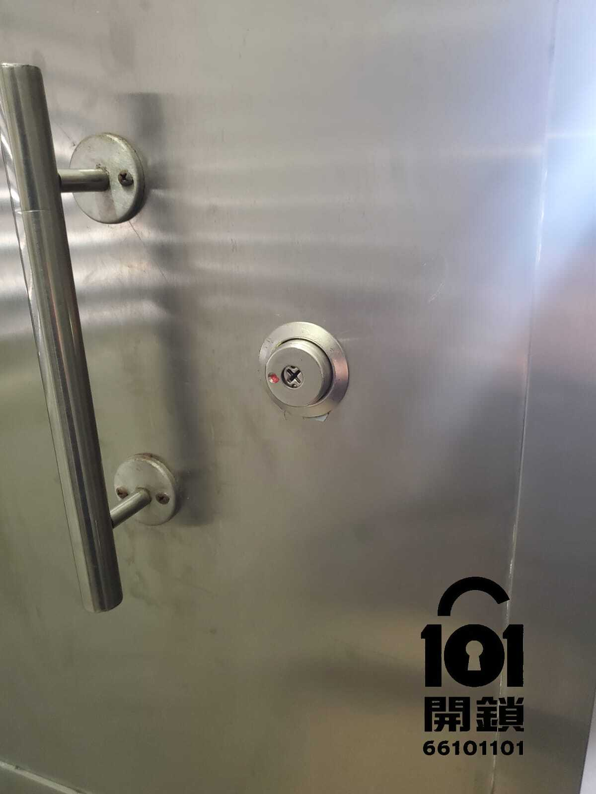
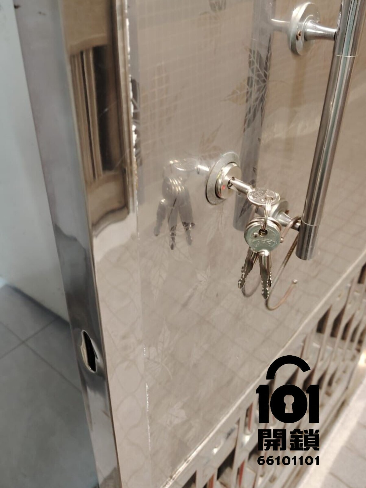

十字鎖（又稱十字膽鎖）係香港舊式唐樓、私樓大門、鐵閘以及好多辦公室常用嘅門鎖。鎖膽剖面呈十字形，有四排珠仔對應鎖匙四面坑紋。雖然近年電子鎖普及，但十字鎖由於、安裝簡單，依然廣泛使用。最常見嘅問題就係「鎖匙插入唔到」或「插入一半卡死」，好多街坊都會因此被困門外。
好多十字鎖匙嘅手柄或匙身都有一個微小嘅標記（凹點、箭嘴、顏色點或刻線），呢個標記代表「向上」或「向指定方向」。插入前必須將標記對準鎖膽外殼嘅參考點（通常係鎖膽面上嘅刻度或圓點），先可以順暢插入同拔出。如果標記錯位，強行插入會加速磨損，甚至即刻卡死。



根據101開鎖師傅多年經驗，以下係最常見嘅故障現象，睇下表對照你遇到嘅情況：
| 故障現象 | 主要原因 |
|---|---|
| 鎖匙完全插唔入 | 鎖孔有異物 |
| 鎖匙插唔入，只入到1-2mm | 十字鎖細匙筒位置不正確 |
| 鎖匙插入一半就卡死，前後郁唔到 | 十字鎖細匙筒位置不正確 |
| 鎖匙可以完全插入，但扭唔動 | 鎖體/結構有問題 |
| 插入後鎖匙好緊，好難拔出 | 鎖匙斜度有問題 |
| 鎖匙插到最入但無法順暢轉動，甚至斷匙 | 鎖膽與鎖體配合出現偏差（鎖膽螺絲鬆）或異物卡死 |
| 用咗多年十字鎖，成日插唔順 | 長期磨損，彈珠或鎖匙磨損至臨界點 |
我哋熟悉香港各種十字鎖型號，無論係鎖匙插唔入、斷匙、鎖膽卡死，師傅都可以快速上門處理，並會提供正確標記對位教學，幫你慳錢省時。
仲有疑問？立即聯絡專人解答